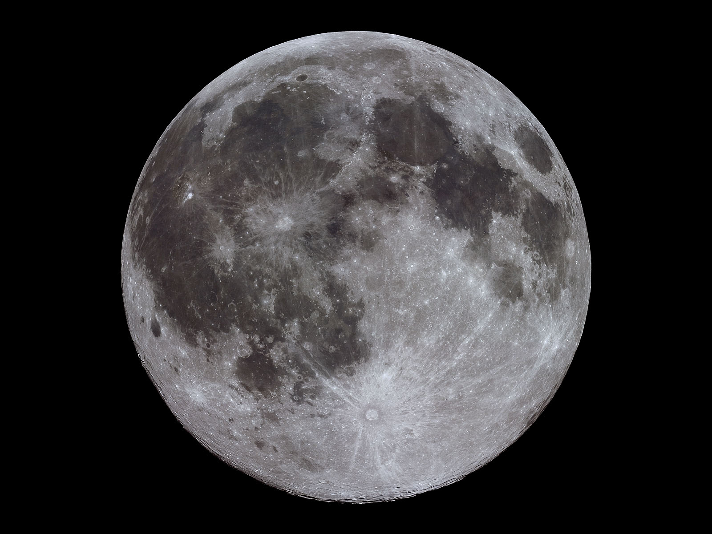

¿QUÉ ES UNA SUPERLUNA?
El perigeo es el punto más cercano que alcanza la Luna en una revolución completa alrededor de la Tierra. El punto más alejado de la Luna de la Tierra se llama apogeo. Los perigeos y apogeos existen porque la órbita de la Luna alrededor de la Tierra no es un círculo perfecto sino una elipse (óvalo). La distancia media del perigeo es de 363 300 km desde la Tierra, y el apogeo es de 405 500 km.
Seguir leyendo
¿POR QUÉ ESTA IMAGEN ES TAN IMPORTANTE ESTA IMAGEN?

Sagitario A*, el suejo de nuestra fotografía, es el agujero negro que ayudó a formar nuestra galaxia, por ello lo podríamos considerar como un abuelo estelar que ayudó en la formación de estrellas, que después formaron planetas.
Seguir leyendo
¿QUÉ PASA DURANTE UN ECLIPSE LUNAR?

Es asombroso ver el cambio de color en la luna, pero se vuelve aún más interesante cuando comprendemos el porqué de ese cambio.
Un eclipse lunar se da cuendo la luna pasa a través de la sombra que proyecta la tierra..
Seguir leyendo